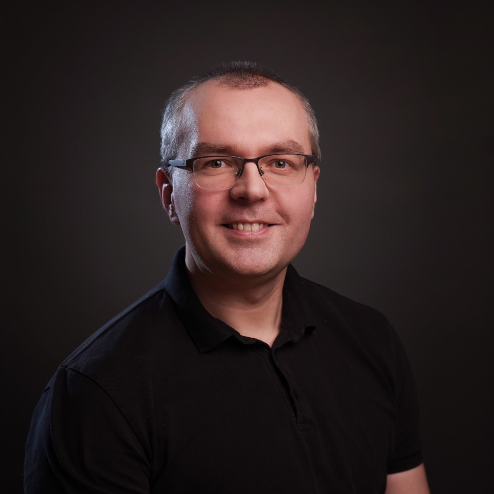

---
# Feel free to add content and custom Front Matter to this file.
# To modify the layout, see https://jekyllrb.com/docs/themes/#overriding-theme-defaults

layout: home
---

<section>
  <div>
    <p>
      Hi! I'm Sławomir Radzymiński, a passionate test engineer and AI enthusiast
      based in the beautiful city of Kraków.
    </p>

    

    <p>
      I'm a seasoned test engineer specializing in software quality and test automation,
      with extensive experience integrating these practices into CI/CD processes. I'm
      particularly passionate about the practical application of artificial intelligence
      in testing and software engineering – from generating test plans and test cases,
      through creating automated tests, to intelligent risk analysis. As a Senior Staff
      Test Engineer at Ocado Technology, I focus on modern techniques for delivering
      high-quality products in the shortest possible time, sharing my knowledge and
      expertise both at work and as a trainer with various companies and universities.
    </p>

    <p>
      Beyond the world of testing and AI, I cherish my time with my wonderful family
      and stay active with squash, scrabble challenges, and exploring new destinations.
      I maintain my fitness with regular gym sessions and love unwinding with TV series
      alongside my wife – always striving to balance my passion for technology with
      the joys of everyday life.
    </p>

    
  </div>
</section>
